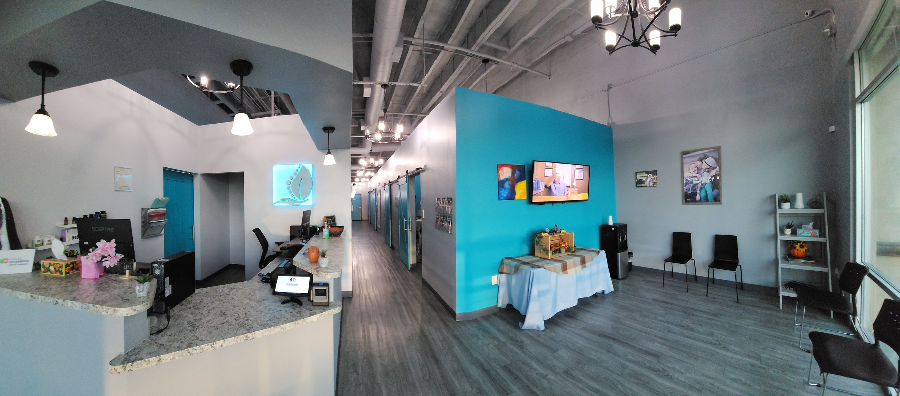
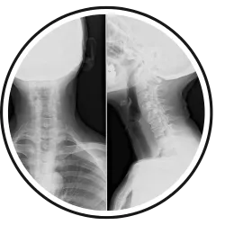
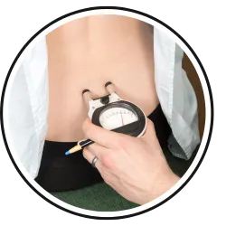
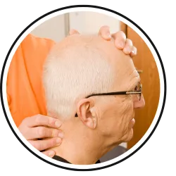
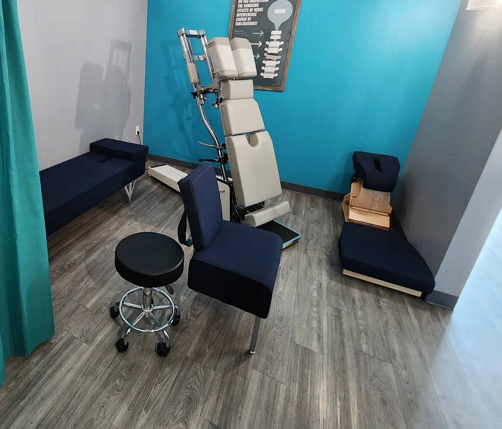

Feel Good, Live Better Naturally With Our Tailored Chiropractic Care.
Whether you're just visiting Las Vegas or an established resident looking for a great chiropractic experience from an exceptional chiropractor in Las Vegas, Evergrowth Chiropractic is just the place for you!
Las Vegas, NV 89123
Tue 3pm to 6pm. Fri by appointment.
Sat and Sun closed.
Chiropractor Las Vegas, NV
We offer a wide range of chiropractic therapies and pain management methods to address conditions such as low back pain or severe back issues. Our clinic in Las Vegas focuses on determining the root cause of your discomfort and using natural healing techniques to achieve your wellness goals. Our team is dedicated to answering all your questions and assisting you in harnessing your nerve system's natural ability to heal.
Welcome To Evergrowth Chiropractic
Being a Gonstead Chiropractor is nothing short of a blessing! The life changing transformations we've seen patients experience here at Evergrowth Chiropractic is what motivates us each and every day.
What Can a Las Vegas Chiropractor Treat?
A Chiropractor in Las Vegas can provide a range of services to help you feel your best. Whether you are experiencing musculoskeletal pain, playing sports and need a chiropractor, or just looking to improve your overall health and vitality, our friendly chiropractic team at Evergrowth Chiropractic is here to help.
Convenient Hours
We're open as early as 10:00am and as late as 6:00pm. That way you can visit on your schedule.

Discover Gonstead Chiropractic Care
We offer the Gonstead Technique, which is only utilized by a few chiropractors in Las Vegas.
This comprehensive, scientific method uses a thorough system of analysis and chiropractic adjustment that is unlike any other technique in existence.



What patients say about Evergrowth Chiropractic
Dr Will is a GREAT chiropractor. I used to have lower back pain that was frequent; now I no longer have that pain. With regular adjustments my back stays aligned and free from tension and stiffness. I highly recommend Evergrowth Chiropractic services for individuals and families!
DNoria R.I enjoy my visits to Evergrowth Chiropractic so much! Dr. Will is amazing! I feel so refreshed after my treatments. Wendy is so sweet and friendly as well! I highly recommend their practice; I'm so glad I found them! Relaxing, no stress atmosphere.
Emily E.It was my first time being adjusted and WOW. The Experience from start to finish was Awesome!
Professional Friendly and Personable staff and Dr Will was kind and was super informative about my visit and what needed to be done. So happy I am now a Patient!!
Laurie W.Very professional and knowledgeable. We brought my 9 year old due to issues with her ears and they explained everything thoroughly and made her comfortable. I highly recommend Evergrowth Chiropractic.
Andrea V.Dr Willie So Dedicated To Your Spine Health
Gonstead Chiropractor Focused On Precise Care
Dr. Willie So is dedicated to providing precise, individualized chiropractic care through the Gonstead Method. With a focus on continued education and patient-centered care, Dr. Willie So works with each patient to understand their unique needs and develop an appropriate care approach. With a commitment to detailed evaluation and personalized treatment, every visit is designed around the individual patient. Dr. Willie So believes in educating patients so they can better understand their spine, health, and care options. The goal is to create a supportive experience that helps patients feel confident throughout their chiropractic journey.
Learn More
Why Choose a Chiropractor in Las Vegas?
Choosing a Gonstead Chiropractor means opting for natural and holistic approaches to healthcare. By focusing on your body's innate ability to heal itself, chiropractic care in Las Vegas empowers you to take charge of your well-being. This personalized care emphasizes treating the root cause of issues rather than just the symptoms, promoting long-term health benefits.
Evergrowth Chiropractic offers a personalized approach to wellness by tailoring treatments to your specific needs. Through individualized care plans, they address your unique concerns, whether it's back pain, neck pain, migraines, or overall wellness goals. This personalized attention ensures that you receive the best possible care to achieve optimal health.
Our Chiropractors use gentle adjustments to restore proper alignment, alleviate pain, and enhance the body's natural healing processes. This approach helps you reach your wellness goals and maintain a healthy, active lifestyle.
These Common Symptoms
Back Pain
Chiropractic care could be a viable solution if you're dealing with persistent back pain.
Neck Pain
A thorough understanding of neck pain is crucial for selecting treatments that aid in effective recovery.
Headaches
Chiropractic care has been effectively relieving headaches and migraines with great success.
Sciatica
This condition triggers pain that starts in the lower back, extends down the back of the leg, and reaches into the foot.
Disc Injury
Chiropractic treatments have consistently demonstrated effectiveness in treating disc-related injuries.
Wellness
Poor health isn't always manifested through feelings of sickness or pain. Your chiropractor is a great resource.
What To Expect At Your First Chiropractic Visit
Start Your Chiropractic Health Journey TodayWe Listen Closely To Your Health Goals
We begin by learning about your concerns, history, lifestyle, and goals.
We Analyze Your Spine With Precision
A detailed chiropractic evaluation helps us better understand your spine and areas that may require attention.
We Explain Every Chiropractic Step Clearly
We take the time to explain our findings and answer your questions so you understand your care.
We Provide Gentle, Focused Chiropractic Care
Your chiropractic care is based on your individual needs and the findings from your evaluation.
We Track Your Healing Progress Together
We continue to evaluate your progress and adjust your care approach as appropriate.
Schedule Your 1st Visit Now
Today is the perfect day to visit us! Let us show you how chiropractic care in Las Vegas is a short drive to better health.
Things you might not know about Chiropractic
Most people do not realize the lengths chiropractors had to go through to succeed in their profession. Hours and hours of constant training and education, which translate to those of a physician, are required to even graduate school. After 4 years of undergraduate medical education, chiropractors must continue on with another 4 years in a chiropractic college. Building and testing their knowledge rigorously, chiropractic school is no joke.
Gentle and precise adjustments are the main works of a chiropractor. These adjustments should realign the spine, resulting in fully functioning muscle tissue and neurological pathways. A correctly aligned spine is the start of a restoration of health and pain relief because there is no blockage in the communication of nerves throughout the body.
If you would like to schedule a new patient visit, feel free to call our office (702) 389-5009.
Common Questions About Chiropractic Care
What does a Chiropractor do?
Chiropractors restore “normal” nerve transmission/function to the body through specific adjustments to the spinal bones. “Abnormal” nerve function (too much/too little) comes from misaligned bones or what chiropractors commonly refer to as “subluxations”.
These “subluxations” can create a state of “dis-ease” in the body…sometimes resulting in certain conditions. Specific adjustments bring the body back to it’s “EASE” state, oftentimes restoring one's state of health.
Does Chiropractic work?
To determine whether chiropractic will be effective or not, one must consider a few important factors:
- Age of patient
- To the degree that the condition has progressed
- The body’s own innate ability to heal
- The chiropractor's ability to correctly analyze and adjust your spine
- The time you allow for recovery
Are all patients adjusted the same way?
No. Adjustments are intended to be specific. The specificity is what makes chiropractic unique! Treating everyone the same way with the same twisting of the neck and lower back from right to left and popping everything in between is not at all specific. Anything less than specific is not chiropractic and may do more harm than good to the patient!
Why should you choose our office?
Evergrowth Chiropractic uses the Gonstead method of adjusting and analyzing the spine. We're one of a few offices in Las Vegas that exclusively uses the Gonstead method. By thoroughly analyzing the spine through the use of x-ray, instrumentation, visualization, static and motion palpation you can expect a properly delivered adjustment.
Are chiropractic adjustments safe?
Yes, chiropractic adjustments are safe…given that they are performed by a skilled and competent chiropractor! Like I tell patients, anyone can make a “popping” or “cracking” noise but very few people can make a proper adjustment. This is an art or skill that takes years to become efficient at. Chiropractic has been around since 1895 with a proven track record of success!
What other conditins can be treated by chiropractic care?
Besides the more common symptoms of neck and back pain, patients may often find relief/support with other symptoms such as:
- Vertigo/dizziness
- Headaches/Migraines
- Menstrual issues
- Digestive issues/Diarrhea/Constipation
- Heartburn
- Asthma
- Pregnancy
- Carpal Tunnel
Just to name a few!
Can I get chiropractic care during pregnancy?
Absolutely! During pregnancy, a women’s body goes through some pretty dramatic changes that can create stress along the spine. If the spine was already stressed before pregnancy, chances are it will intensify during the pregnancy. Great care is taken to be sure that both the mother and her baby are safe when performing an adjustment. We utilize special adjusting tables with different modifications to give the most gentle and accurate adjustment up to the time of delivery.
Why can't I adjust myself?
Unfortunately, most people associate a “popping” or “cracking” noise as being on the same level as an adjustment. Certainly, If you rotate your spine hard enough you will likely create a loud noise! However, this in no way constitutes an adjustment and may prove to be more harmful than good!
Adjustments are specific! For instance, the Gonstead technique utilizes a listing system that helps the doctor determine how the misalignment is occurring and the best way to make the correction.
It’s important to adjust the bone in the proper direction in accordance to how the bone is misaligned. It’s of even greater importance that the adjustment reduces and eventually eliminates nerve pressure and restores vital nerve function.
How does a chiropractor help sciatica?
Sciatica often presents itself as pain down one leg or both. Oftentimes, the pain may travel all the way to the foot. Typically, when there is misaligned bone (subluxation) in the spine, this will induce an inflammatory response in the disc that can potentially irritate the spinal nerves…in this case, the nerves that travel down the leg.
With a proper analysis, the doctor can specifically determine how a vertebrae has misaligned and where the nerve pressure is being affected. This information is then used to determine the best approach to restoring proper position and motion of the subluxated vertebrae that may be affecting, in this case, the sciatic nerve.
Ready To Find Out More Information?
Evergrowth Chiropractic
9555 S Eastern Ave, Ste 240B, Las Vegas, NV 89123
Hours
- Mon, Wed, Thu10am to 1pm, 3pm to 6pm
- Tuesday3pm to 6pm
- FridayAppointments only
- Sat, SunClosed